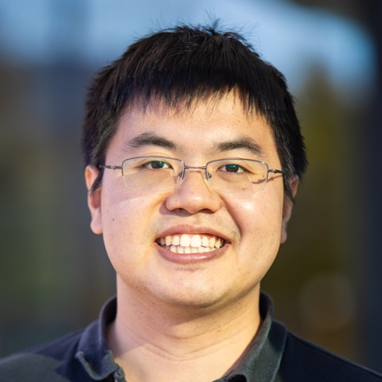
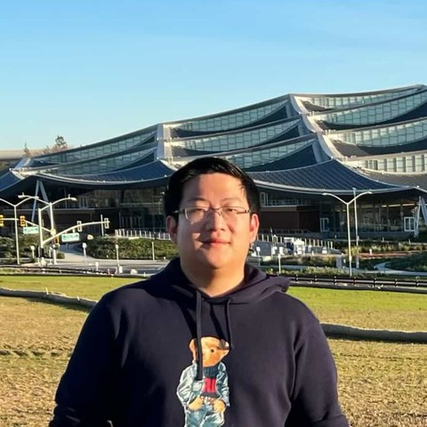
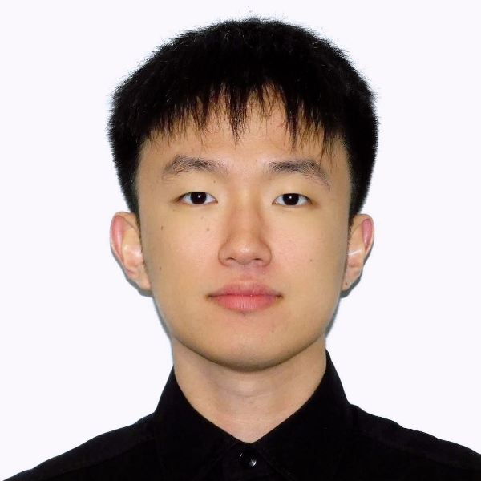

NeurIPS 2026 · Full-Day Workshop
Sydney, Australia · 2nd Edition
The 2nd Workshop on Embodied Spatial Reasoning
TL;DR
Embodied agents and video world models both need space: object permanence, spatial memory, physical consistency, long-horizon coherence, but build it in isolation. ESR brings embodied AI, spatial reasoning, and world modeling together for one day.
Invited speakers

Jiajun Wu
Stanford University

Katerina Fragkiadaki
Carnegie Mellon University

Yilun Du
Harvard University
Manling Li
Northwestern University

Sifei Liu
NVIDIA
Call for papers & demos
Paper track
4–8 pages · NeurIPS 2026 format · non-archival: methods, benchmarks, analyses, position papers
Demo track
Interactive, visionary systems: embodied agents and world models you can watch behave
Key dates (AoE)
- Submissions openAug 5, 2026
- Submission deadlineSep 5, 2026
- Acceptance notificationSep 25, 2026
- Camera-readyOct 25, 2026
Organizers

Wufei Ma
Johns Hopkins

Haoyu Chen
Harvard

Hunar Batra
Oxford

Tommie Kerssies
TU Eindhoven

Ju He
Apple

Yu-Cheng Chou
Johns Hopkins

Tiezheng Zhang
Johns Hopkins

Adam Kortylewski
CISPA
Yilun Du
Harvard

Alan Yuille
Johns Hopkins
embodiedsr.github.io
Paper and demo submissions via OpenReview
1st edition · ICCV 2025